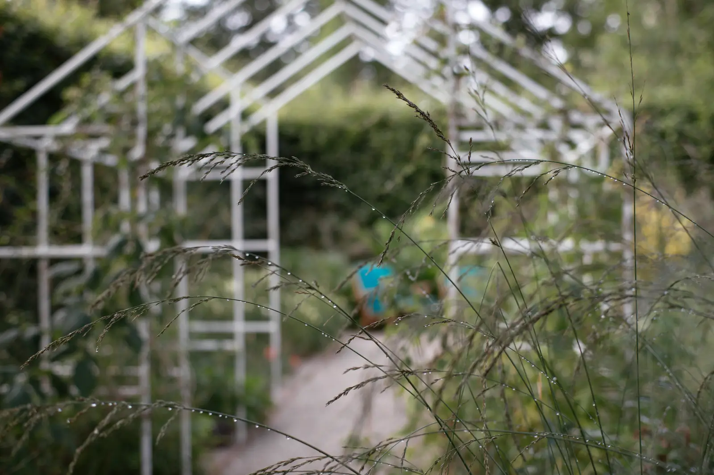
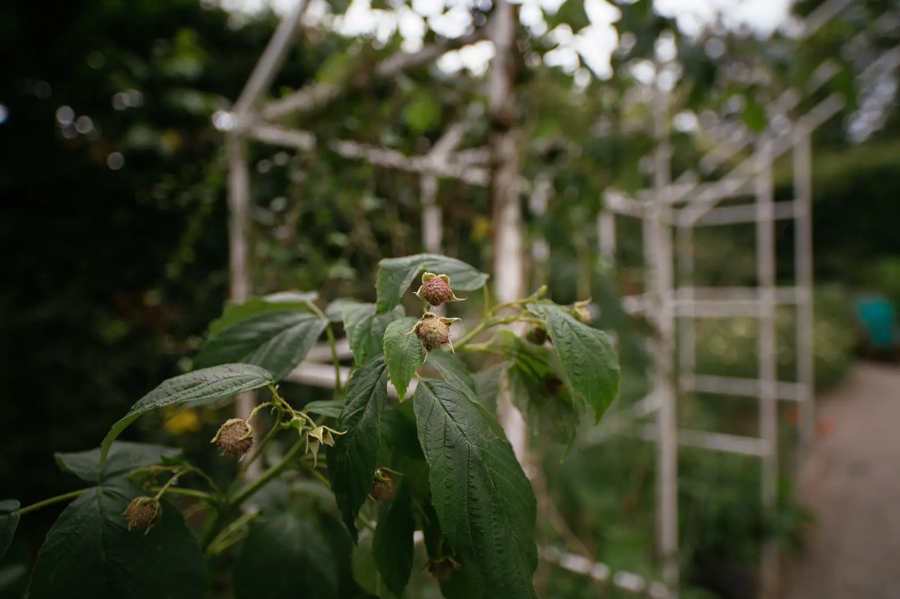
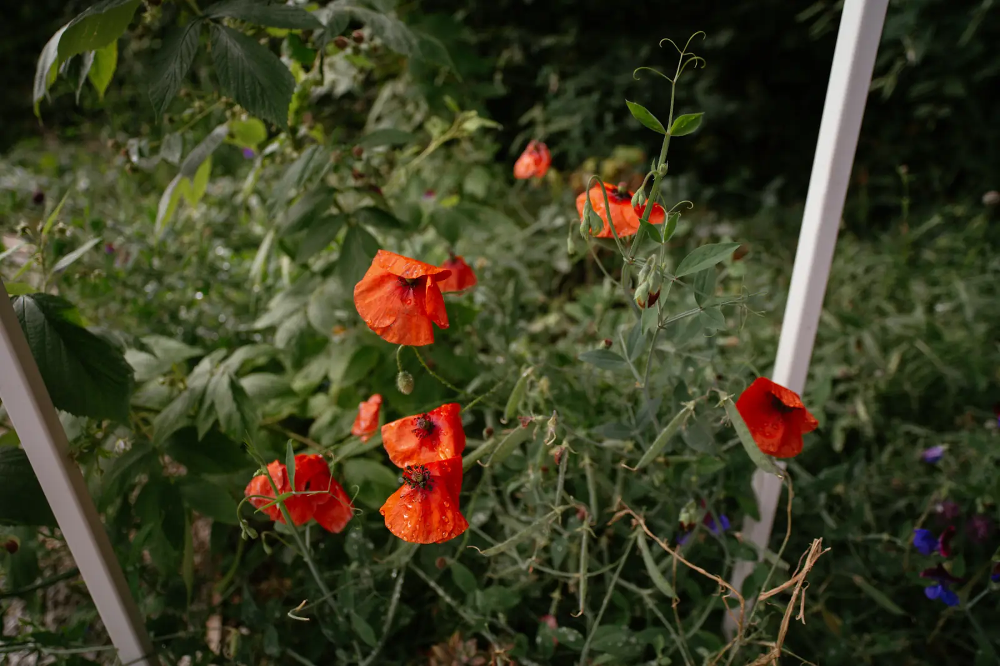
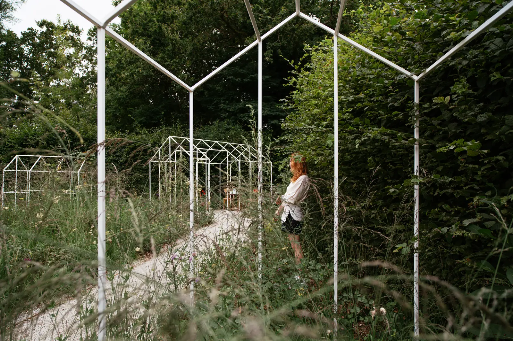
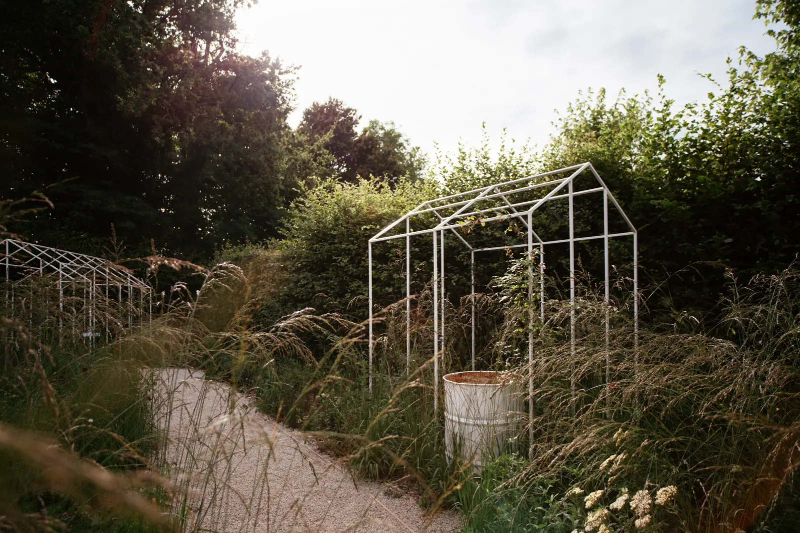

шомон
Le Jardin Comestible — «Съедобный сад» на международном фестивале садов в Шомон-сюр-Луар: ностальгическое воспоминание о советских дачах, где садоводство было способом выжить в годы дефицита.
Пять оранжерей наполовину заняты овощами, наполовину — разнотравьем из сообществ арт-парка Никола-Ленивец: молинией, коровяком, шалфеем, репешком и космеей.
Дачный быт — бочка для полива, эмалированная посуда, чехословацкие стулья — и звуковая инсталляция Владислава Сорокина из звуков старой дачи.



